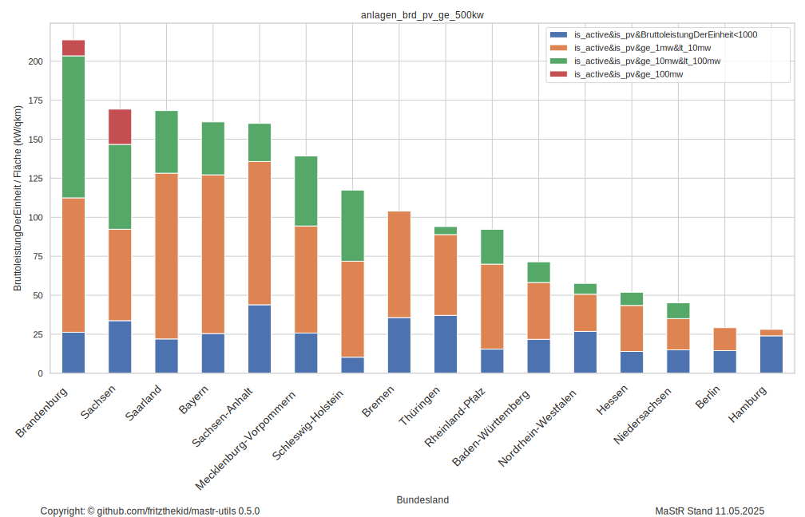
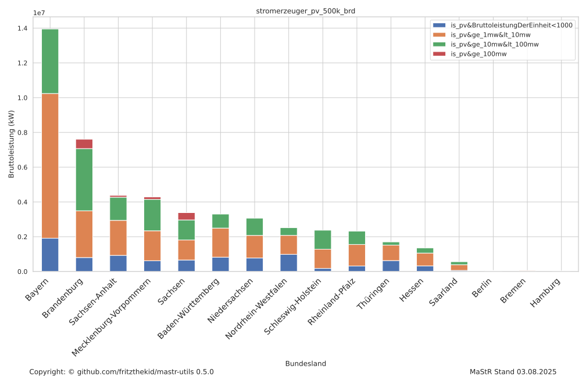
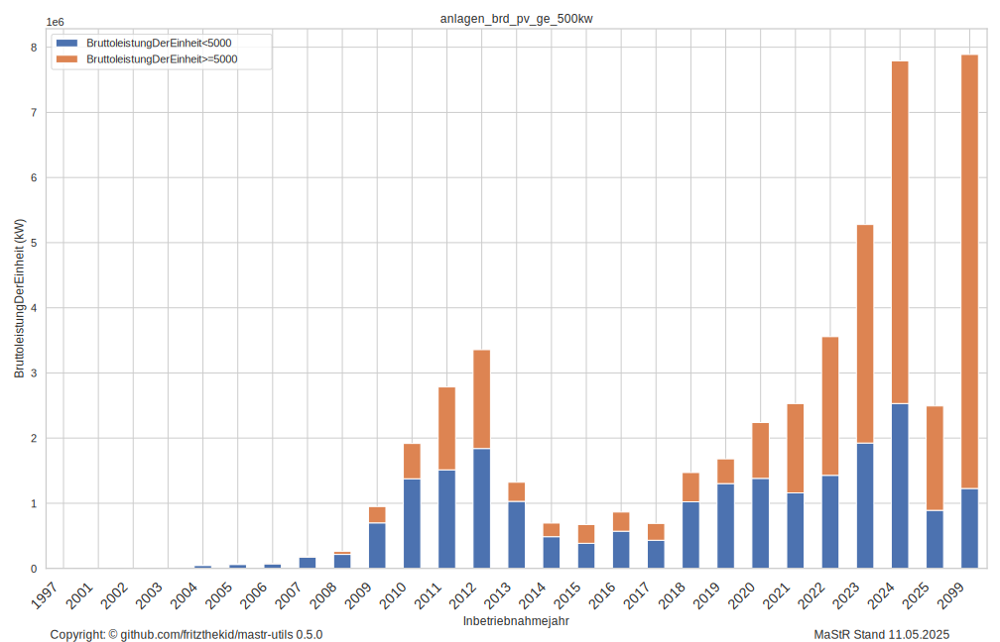
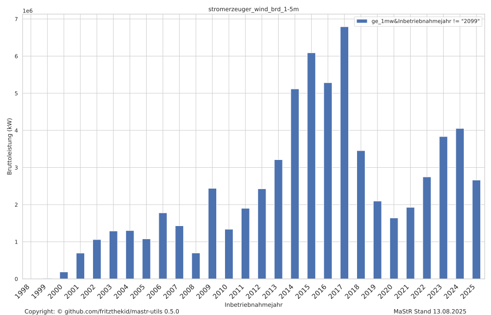
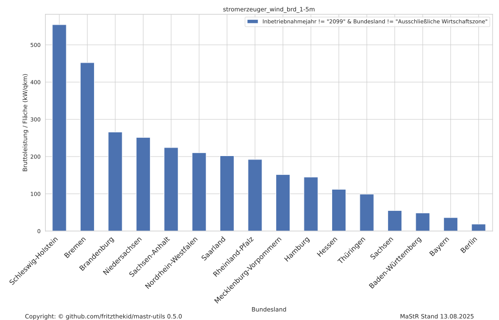
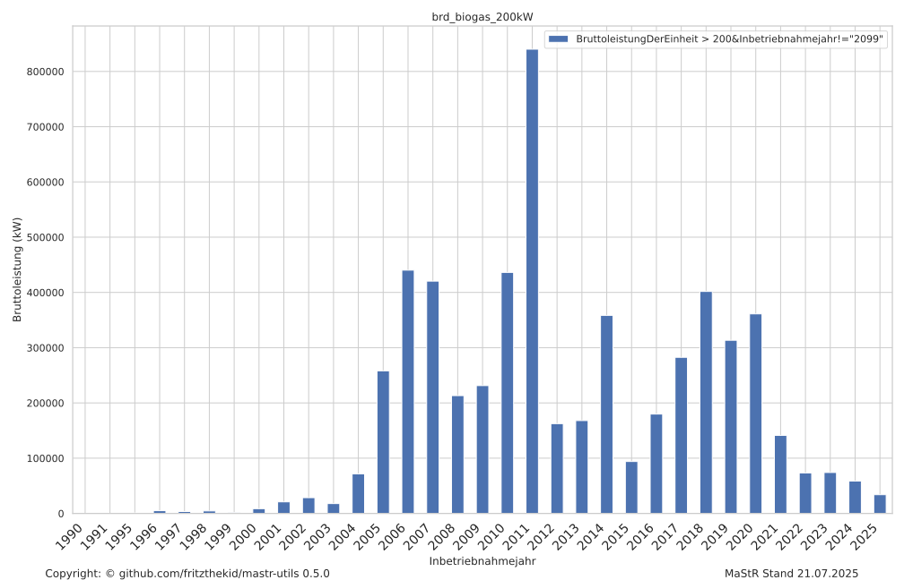
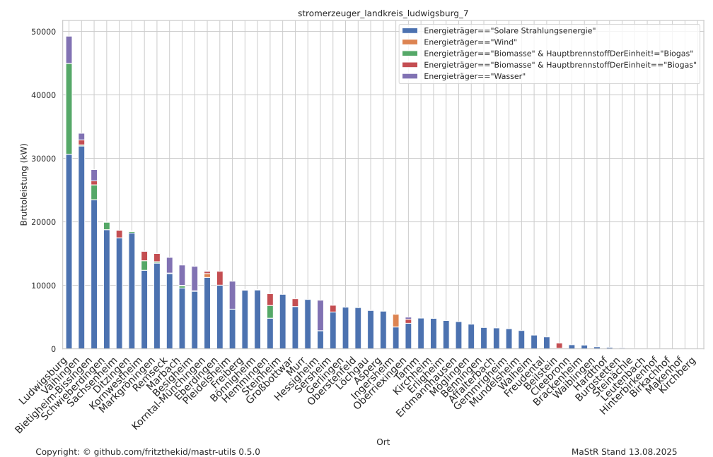
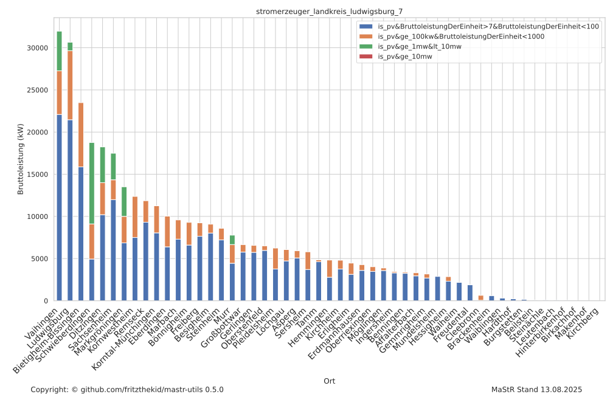
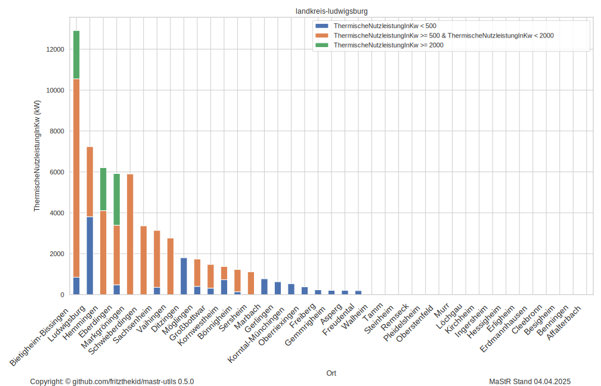

Stromerzeuger PV > 500kw installierte Leistung
Stromerzeuger PV > 500kW: Aktive Bruttoleistung pro Fläche
Hier wird die Option verwendet:Query E/Args: # pa
Stromerzeuger PV > 500kW Split in Leistungssektoren
Stromerzeuger PV > 500kw installierte Leistung - Abhängige: Inbetriebnahmejahr
Tabellarische Darstellung (hier nur bis 2013, kann als .csv komplett exportiert werden)
Stromerzeuger Wind > 1.5mw installierte Leistung
Stromerzeuger Wind > 1.5mw installierte Leistung - Abhängige: Inbetriebnahmejahr
Stromerzeuger Wind > 1.5mw installierte Leistung pro Fläche
Stromerzeuger Biogas > 200kw installierte Leistung - Abhängige: Inbetriebnahmejahr
Landkreis Ludwigsburg
Landkreis Ludwigsburg > 7kw installierte Leistung - Split nach Energieträger
Landkreis Ludwigsburg > 7kw installierte PV Leistung - Sectorsplit
Landkreis Ludwigsburg installierte thermische Leistung
Hier wird die Option verwendet:Query E/Args: # ordinate=ThermischeNutzleistungInKw